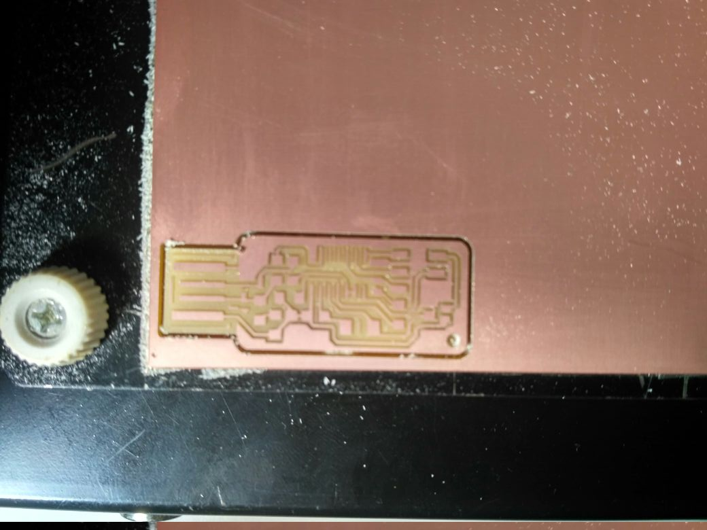
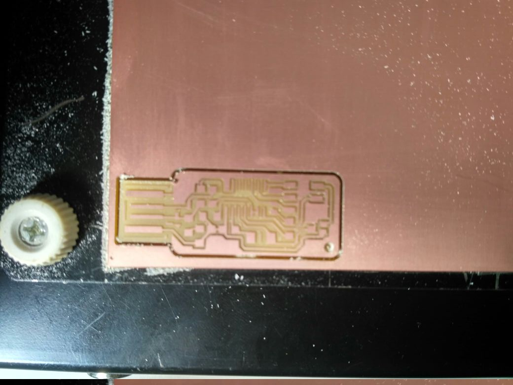
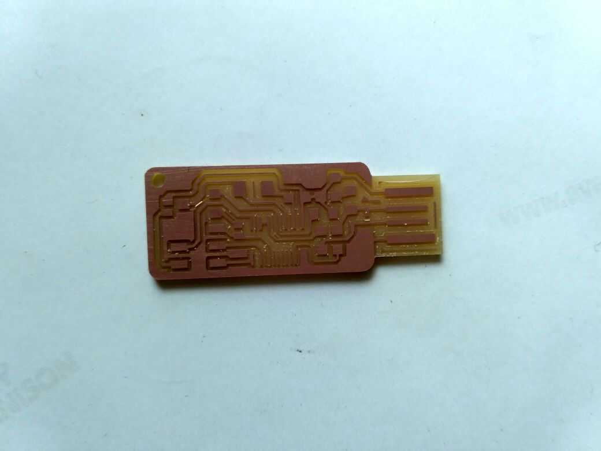
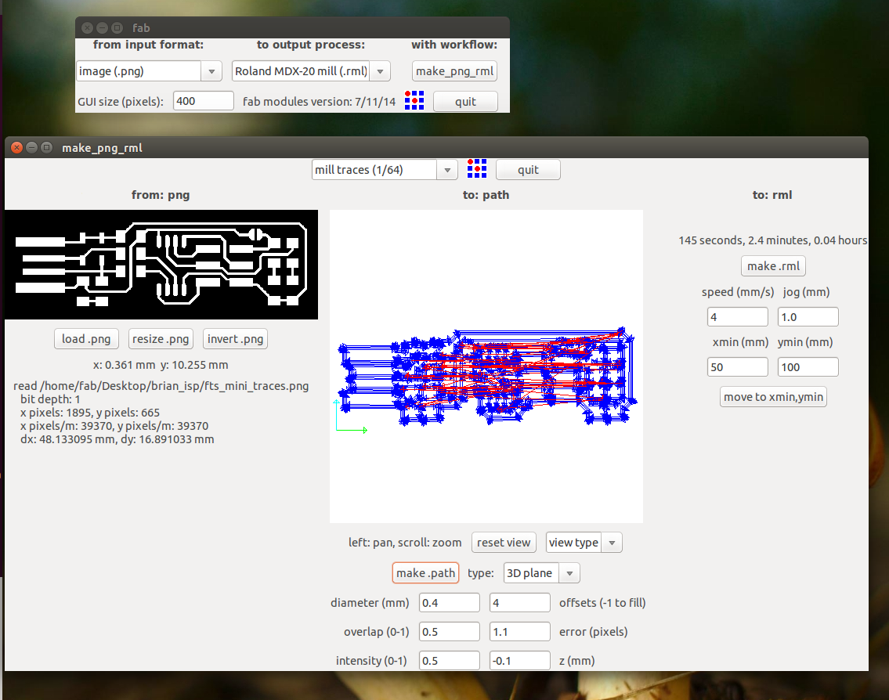
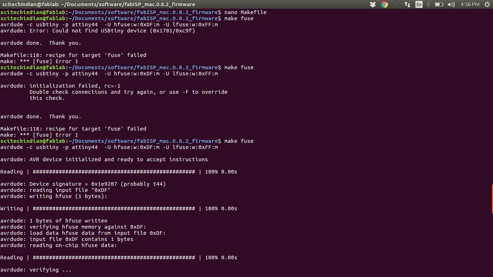

What is PCB ?
PCB means Printed Circuit Board
A printed circuit board (PCB) mechanically supports and electrically connects electronic components using conductive tracks, pads and other features etched from copper sheets laminated onto a non-conductive substrate. Components (e.g. capacitors, resistors or active devices) are generally soldered on the PCB. Advanced PCBs may contain components embedded in the substrate. PCBs can be single sided (one copper layer), double sided (two copper layers) or multi-layer (outer and inner layers). Conductors on different layers are connected with vias. Multi-layer PCBs allow for much higher component density.
general purpose prototyping PCB ( Source:Google images)
Printed circuit boards are used in all but the simplest electronic products. Alternatives to PCBs include wire wrap and point-to-point construction. PCBs require the additional design effort to lay out the circuit, but manufacturing and assembly can be automated. Manufacturing circuits with PCBs is cheaper and faster than with other wiring methods as components are mounted and wired with one single part. A minimal PCB with a single component used for easier modeling is called a breakout board.
There are two ways of mounting the parts to the PCB. The Trough Hole Mounting:mounting technique involves different components which have lead wires that are led to the board through holes, hence the name. And in Surface Mount Technology(SMT), the leads are soldered on PCB surface directly rather than using hole mounting
I used to build the PCB boards using the Chemical etching method were the chemical reaction takes place Ferric chloride is used to corrode the copper where the masking is not there ,the mask can be produced many ways we can simply draw it using the perminant marker or we can put UV light curing masking paste to draw the traces,but now i am for the first time using a CNC Milling procedure to build the PCB Boards
Let's go to the Machine overview
Machine and Machining Process
Modela MDX20 Machine
Modela MDX20 Machine
We used the Modella MDX20 to machine our PCB. Modella is a Desktop milling machine that is capable of milling wax, MDX,and circuit board planks.It has a small bed which moves in the Y-axis, a Tool head which moves in the X-axis and the end effector which moves in the Z-axis. It supports many milling bits and is easy to use. The machine itself has a tiny foot print and can be placed on a table. we controlled the device using the Fab Modules. you can find more about the machine here
Features of Modela
| Work area | 203.2 x 152.4 mm |
| Z stroke | 60.5 mm |
| Spindle speed | 6500 rpm |
Modela MDX20 Machine complete overview Source
The key controls of the machine are :
Our Instructors(Yadu and Vishnu ) explained about the modela machine and how to operate and what reasons cause the broken bits and also given insights to use the machine properly ,the most important part is cleaning the machine after use
Steps to setting up the machine
Step-1
First we have to set the work plate. The work plate is mounted to the table through two screws. Here work plate is acting as "Y". The work plate can be moved outword by pressing the view mode in the machine unscrew and take out the workplate over this plate we have to fix our bare copper sheet using transparent double side tape. It is better to provide a sacrificial layer inbetween the plate and board will ensure more safety to the machine and bits. Here we used a large single side pcb because for total 9 peoples we can use this single board.

Step 2
Identifying the Bits
There are different kinds of bits used for milling and cutting. In modela we have bit dia starting from 0.254(0.01inch) to 3.175mm(1/8").This week we require 1/64 inch(0.396875mm) bit for milling the traces and 1/32inch(0.79375mm)bit for cutting. We have procured local bits available from India,it is good and cheaper. The dimension of the bits used are same, for milling 0.4mm and 0.8mm for cut out the board.The bits used are shown below.
Drill bits
Step 3
Machine setup
Next is to setup the machine for milling and cutting.First we will mill the traces for that turn ON the machine and insert 1/64(0.4mm)bit to the spindle and tight using the Ln Key(1.5mm). There are two screws facing opposite. Ensure the bits are properly placed and there is sufficient space is there in between bottom surface of the carriage and workplate surface. Want to know more click here
Tighting with the Ln key
Always first load the bit deep inside before the z- axis lowering test droping down then later loose and let it touch the bed and then tight on the bothsides screws
Step 4
Fab Modules setting
just enter the $ fab in terminal you see fabmodule open as below
Then we choose the .png and Modela MX-20 (.rml) and we make it
Then we have to choose the png which we want the traces and we find this kind of interface when we do the make it there we select the required settings for tracing we select the 1/64 mill traces and the origin is set my origin is set at x,y (2,0)
Then we will send the make rml to the machine and the action starts and we can see the traces are being milled and finally we can observe near the milling machine

Step 5
Cutting the board
Now the final process of the machine procedure comes where we will set the origin to the we set before (i.e;(x,y)(2,0)) and then we will load the .png used to cut the board and choose the cutting 1/32 bit then change the bit and similarly make .rml and then send it to machine Warning ! don't forget to make the origin as same as done before this can mess all your milling

once you done you can see the final output with the traces milled and cutted bard
 

Before cutting the board and after cutting the board
Last but not least please Don't forget to clean the machine after your job is completed
Now let's move forward to the Understanding the FabISP
FabISP
I was Intrested to build the Andy's FABISPKey as it is very small and looks similar to a Pendrive ,i had a plan to build a case for the same on the 3Dprinting week and there are more components there as i love to solder i chosen this now from the lecture notes i have taken the traces and already milled the board i have explained in the machining process flow
Andy's Fab ISP Key
Then later i found that the bill of materials was not clearly mentioned in the andys website then i have made a table below found the components from schematics

Here is the Bill Of Materials for my FAB ISP.
| ATtiny44 | 1 No |
| Resistor 1KΩ | 1 Nos |
| Resistor 10KΩ | 1 Nos |
| Resistor 0KΩ | 1 Nos |
| Resistor 499Ω | 1 Nos |
| Resistor 49.9Ω | 2 Nos |
| Zener 3.3V | 2 Nos |
| Capacitors 10pf | 2No |
| capacitor 1uf | 1 No |
| Capacitor 100nF | 1 No |
| Crystal 20MHz | 1 No | IDC connector 2X3 | 1 No |
here is my board after the milling process looks
Then i have done the post processing removed the excess copper still reamianed where milling is not possible then ,i have sucessfully soldered but later in hurry i made a mistake and the trackes of the board where missing then i thought to build another board which has less components as all other friends done with brain so i decided to make the brain
Mistake done by me is i thought to add a LED from outside to know the status of the ISP as andy's design has no indicator i have placed the LED but forget to add a resistor to it thus it blown and track was got depriciated
Brains Fab ISP
The designs and code for creating the ISP have already been provided. I decided to replicate the ISP done by Brain. as it has the less complication and also has the LED's
The schematic and the traces for Brian's design of in-circuit programmer.


i have repeated the process of the milling for this board also and then i have soldered it

Here is the BOM for my FAB ISP.
| ATtiny45 | 1 No |
| Resistor 1KΩ | 2 Nos |
| Resistor 499Ω | 2 Nos |
| Resistor 49Ω | 2 Nos |
| Zener 3.3V | 2 Nos |
| LED Red | 1 No |
| LED Green | 1 No |
| Capacitor 100nF | 1 No | IDC connector 2X3 | 1 No |
Finally my new Milled board looks like this

Now lets go to the section of the Soldering
Soldering
What is Soldering ?
Soldering, is a process in which two or more items (usually metal) are joined together by melting and putting a filler metal (solder) into the joint, the filler metal having a lower melting point than the adjoining metal. Soldering differs from welding in that soldering does not involve melting the work pieces. In brazing, the filler metal melts at a higher temperature, but the work piece metal does not melt. In the past, nearly all solders contained lead, but environmental and health concerns have increasingly dictated use of lead-free alloys for electronics and plumbing purposes. read more
we have a wonderful set of tools in the lab as the reflow owen and couple of essential soldering tools
Essential soldering tools pic credits :Ganadev prajapathi
Thus after the cleaning of the board i have started using the soldering iron and the soldering Led i place the ATTiny44 as this is with more legs and alignment is difficult as suggested by the instructor vishnu and he also given tip to easy solder though i am good at through hole soldering this was my first time doing SMD soldering
Tip ! place soldering rod at the solder pad 5sec and then take the soldering led near to it ,as it takes the solder little and uniformly
Soldering the board
Then finally the board compeletely soldered This is andy's ISPKEY This is Brain's ISP
This is Brain's ISP updated after second time soldering
Thus after this i have made the fale IDC cable with 6wires ribbon of 20cm
This is 2x3 IDC female connectorProgramming ISP
Before you can build and program the firmware onto your board, you need to set up your development environment.
For Ubuntu and other Debian-based distributions, enter the following command, followed by your password when prompted:
sudo apt install avrdude gcc-avr avr-libc make
This shows the sucessful installation of the rquired softwares
Programming for the Andy's ISP Key
I have downloaded the frimware.zip file from the neils ISP documentation here ,as it is mentioned to be made using neils design and followed the programming document from here
This shows the
$ Make clean is working and $ Make Hex is not working
This how i have changed the programmer id from avrisp2 to usbtiny
This shows the
$ Make Hex is working and $ Make fuse is not working

This shows the
$ Make Fuse is working

This shows the
$ Make Program is working
Thus we sucessfully Programmed the Andy's ISPKey
but after desoldering the two jumpers the board is not showing up in the lsusb
Then later debugging with multimeter i got to know i choosen wrong resistors insted of 49.9ohms i have picked the 49.9kohms, while replacing this resistors i got an idea to put a LED in the circuit to see the power on unfortunately i have messed up the tracks and i had burnt the track
Programming for the Brain's Minimal ISP
As i have already set up your development environment, can build and program the firmware onto your board now
Build the Firmware
-
Download the firmware source code
Once in the directory type ‘
$ make’and click enter. This will build the .hex file that will get programmed onto the ATtiny45. When the command completes, you should now have a file called fts_firmware.hex. and then i can just connect the programmer board to target board and hit$ make flashit will programm the board and then i have to$ make fusesThis will fuse the target board and then i have to check the board programmed or not i have to enter$ lsusbthis command will list the board as Multiple vendor USBTinyHurray ! you have sucessfully programmed your ISP Brain board and now you have to connect the board back to programmer boardNow we have to run the command
$ make rstdisblThis does the same thing as the$ make fusescommand, but this time it's going to include that reset disable as well. You should see some progress bars, and with that, avrdude will never be able to talk to this chip again through the ISP header. Now your programmer is finished. Test your programmer by using it to program another board.i have used the Jim's(Brain ISP ) to program my Andy's ISP Board and later i used Rahuls ISP to program my Brains ISP board
Well Done ! Sucessfully completed the Programming section
Hero Shot
Now here we comes to the Hero Shot of the boards This is the Last step of my documentation
Here are my IDC Female Connector and the Brains ISP and Andy's ISPKEY